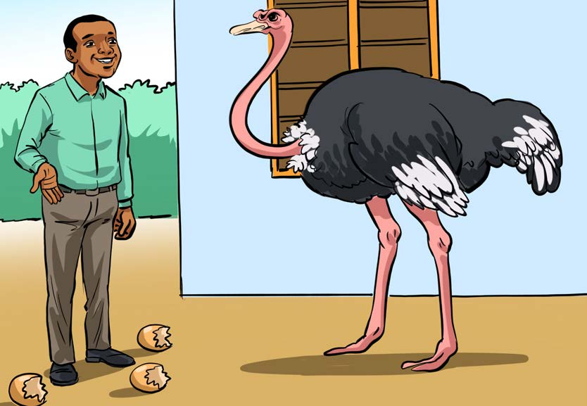

Nakili hadithi kamili ya Kisa cha Mbuni na Binadamu kwa mwandiko wa chapa wenye vikonyo; tumia eneo la kuandikia, kibodi au Breli.
Kisa cha Mbuni na Binadamu Hapo zamani za kale, Mbuni na Binadamu walikuwa marafiki. Waliishi pamoja nyumbani kwa Binadamu. Mbuni alikuwa akitaga mayai makubwa. Binadamu aliyatamani sana mayai hayo, lakini hakujua atayapataje. Siku moja, Mbuni aliondoka kwenda kutafuta chakula. Binadamu alitumia fursa hiyo kwenda kuyachukua mayai ya Mbuni. Mbuni aliporudi, aligundua kuwa mayai yake yamepungua. Alimuuliza Binadamu kwa huzuni, nani amechukua mayai yangu? Binadamu alimjibu huku akicheka, hahaha! Ni mimi. Nimeyachukua na kuyala. Mbuni alichukizwa sana na majibu hayo. Aliamua kuondoka na kwenda kuishi porini. Urafiki wao uliishia hapo. Tangu siku hiyo, Mbuni anaishi porini.
